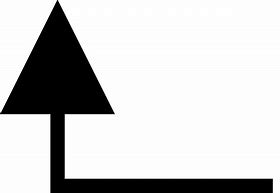
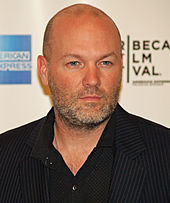
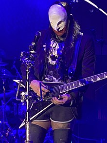
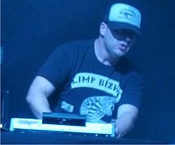
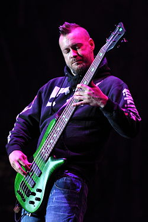

Limp Bizkit es una banda estadounidense de nu metal y rap metal formada en la ciudad de Jacksonville, Florida, en 1994. Sus creadores fueron el líder y vocalista Fred Durst y el bajista Sam Rivers. Posteriormente se unirían el primo de Rivers John Otto como baterista, y el guitarrista Rob Waters, sustituido más tarde por Wes Borland. Un tiempo después se unió el exmiembro de House of Pain DJ Lethal, completando la formación. La banda ha vendido hasta la fecha más de 40 millones de copias en todo el mundo.
La banda saltó al estrellato en junio de 1999, cuando su segundo álbum de estudio, Significant Other, vendió cuatro millones de copias al final de ese año.1 Sin embargo, su gran éxito internacional llegó en 2000 con Chocolate Starfish and the Hotdog Flavored Water, que incluía el sencillo "Take a Look Around" y que formó parte de la banda sonora de la película Misión: Imposible II. La banda de Fred Durst logró romper su propio récord (establecido un año antes con su álbum anterior) tras despachar más de un millón de copias en su primera semana en venta2 y lograr el número 1 en Estados Unidos, Canadá y Reino Unido.3
>Limp Bizkit y especialmente su líder, Fred Durst, han sido siempre acompañados por la controversia. Durst fue duramente criticado tras el Festival de Woodstock de 1999, en el que, durante la actuación de Limp Bizkit, se produjeron numerosas escenas violentas que provocaron el caos entre la multitud. Durante la actuación de la banda se contabilizaron heridos a causa del moshing y violaciones delante del propio escenario.4 Sin embargo, el momento más trágico tuvo lugar durante el Big Day Out de Sídney en 2001, en el que, nuevamente durante la actuación de Limp Bizkit, se produjeron avalanchas de jóvenes mientras realizaban el moshing. A causa de ello, una joven australiana de 16 años murió de asfixia.5
El guitarrista de la banda, Wes Borland, abandonó la formación en 2001 y fue reemplazado por Mike Smith para la grabación del cuarto álbum de estudio de la banda, Results May Vary. Borland regresó para grabar The Unquestionable Truth (Part 1) y volvió a marcharse en 2006. En febrero de 2009 todos los miembros originales de la banda regresaron para ofrecer una gira mundial y grabar un nuevo álbum. Su primer álbum de estudio en seis años, Gold Cobra, fue lanzado el 28 de junio de 2011.6
Después de años de lanzar previamente de un álbum titulado provisionalmente Stampede of the Disco Elephants, la banda lanzó su sexto álbum de estudio Still Sucks, el 31 de octubre de 2021.
Fred Durst, hijo de un policía, se crio en Gastonia, Carolina del Norte, donde era uno de los pocos chicos blancos en el barrio negro donde vivía. Durst empezó a rapear a los 14 años y animado por sus padres montó su primer grupo de rap, The Dynamic 3, que le costó más de una burla en la escuela. Después de terminar el instituto se embarcó en la marina, se casó con Aracely Tergesen, tuvo una hija y se divorció al descubrir que su mujer lo estaba engañando. Durst pasó un mes en la cárcel por asaltar y agredir al amante de su mujer. A los 20, volvió a Jacksonville donde empezó a trabajar como tatuador y a practicar skate. En 1994, conoció a Sam Rivers cuando trabajaba en Chick-fil-A, un establecimiento de comida rápida. Después de verlo en un concierto, Durst convenció al bajista para que dejara su grupo y se uniera a él. Como batería reclutaron al primo de Rivers, John Otto y como guitarrista a otro músico local, el joven prodigio Wes Borland. Durst tenía una visión: montar un grupo en el que pudiera fusionar su gusto por el rap y el metal, el grupo se llamaría Limp Bizkit (literalmente "galleta flácida"), un nombre que, a priori, no parecía muy comercial. Un año más tarde conocerían a DJ Lethal, al hacer de teloneros en uno de los últimos conciertos de House of Pain. Poco después de disolverse esa banda, Lethal se uniría a la banda de Durst.
Durst también dirige su propio sello discográfico, Flawless Records, una división de Geffen Records. Ha firmado con grupos como Puddle of Mudd, The Revolution Smile, Ringside, y Staind.
Estudió 3 años en la escuela de artes Douglas Anderson (misma escuela donde el bajista Sam Rivers estudiaba), para Borland fue difícil el aprender a leer partituras ya que su antiguo maestro le había enseñado a tocar de oído. Cuando estaba en la secundaria formó su primera banda llamada "Krank". Tiempo después junto con su hermano Scott (también guitarrista y partícipe de varios proyectos de Wes) formó Goat Slayer.
En 1994 trabajaba de barman en un centro nocturno donde hacía presentaciones de vez en cuando. Fred Durst vio como tocaba y lo invitó a formar parte de una banda la cual estaba armando con Sam Rivers y John Otto (primo de Sam). Wes rechazó porque tenía su proyecto llamado Big Dumb Face. Después de reflexionarlo mucho Wes aceptó y empezó el grupo Limp Bizkit (1994).
DJ Lethal (nacido como Leors Dimants el 18 de diciembre de 1972 en Riga, Letonia) es un DJ/productor de música hip-hop y rock. Ha pertenecido a los grupos House of Pain y Limp Bizkit, actualmente es el DJ y productor principal del nuevo crew de rap hardcore, llamado La Coka Nostra. Colaboró en gran parte de The Open Door, segundo disco de estudio de la banda de rock alternativo Evanescence. En 2009 vuelve de nuevo a Limp Bizkit.
Lee, como lo llaman sus amigos, comenzó su carrera en el colegio, donde era compañero de clase de la enamorada de un joven Everlast, quien se lo presentó y al poco tiempo ya era el DJ oficial del adolescente M.C., saliendo de gira con el Rhyme Syndicate de Ice-T. Para 1991 se forma el trío House of Pain, con Everlast, Danny Boy y Lethal, como DJ del grupo.
Sam Rivers en su infancia era un skater, empezó a tocar el bajo a los doce años de edad. Solía tocar blues junto a su primo John Otto en la batería, más tarde conoce a Fred Durst cuando trabajaban en la cadena de comida rápida Chick-fil-A en Jacksonville. Rápidamente les unió una buena amistad ya que tenían en común gustos similares en la música y ambos eran skaters. Probaron juntos algunas sesiones de música y formaron, junto a otros miembros, una banda local llamada Malachi Sage. No funcionó demasiado bien y reclutaron a John Otto, primo de Rivers, para formar Limp Bizkit y más tarde Rob Waters en la guitarra quien fue remplazado por Wes Borland y el último miembro de la banda en unirse fue DJ Lethal.
Su primer éxito fue Three Dollar Bill, Y'all$ lanzado en 1997 con ayuda de Korn y de Ross Robinson en la producción del álbum que tuvo éxitos como "Counterfeit" y su versión de "Faith".
Su segundo disco fue Significant Other vendiendo 600.000 copias en la primera semana una gran cifra para la banda de Jacksonville que tuvo hits como "Nookie", "Break Stuff", "Re-Arranged" y N 2 Gether Now.
Chocolate Starfish and the Hotdog Flavored Water es el tercer álbum de estudio de Limp Bizkit. Se grabó en varias locaciones: Larabee Studios East y Westlake Audio, Los Ángeles, California; Larabee Studios West, West Hollywood, California; Studio Litho, Seattle, Washington y, finalmente, en South Beach Studio, Miami, Florida. La producción también se realizó de manera conjunta por Josh Abraham, Swizz Beatz, Terry Date, Fred Durst, DJ Lethal y Scott Weiland. Interscope Records vuelve a firmar el nuevo trabajo de Limp Bizkit. Debutó en el número uno del Billboard 200, vendiendo más de un millón de copias en su primera semana a la venta, récord que solamente había sido logrado antes por The Beatles.
Mientras la banda se encontraba en un receso, Rivers produjo a bandas locales en Jacksonville. En junio de 2011 lanzaron el último álbum de Limp Bizkit, Gold Cobra.
